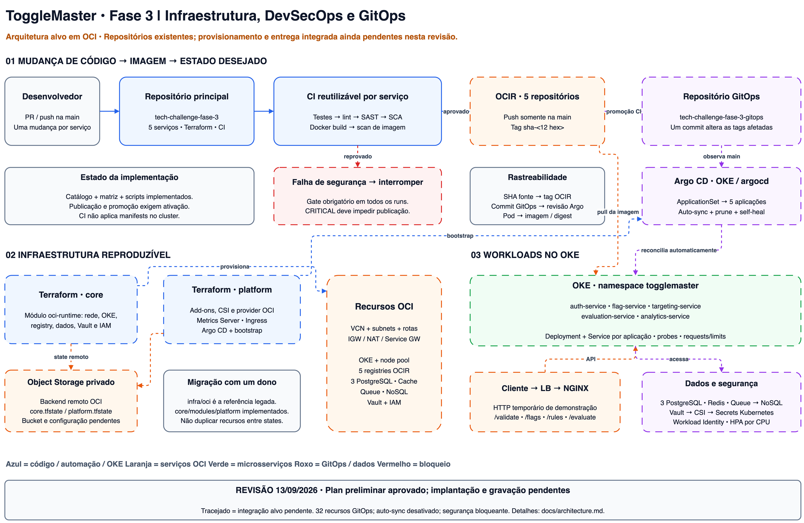
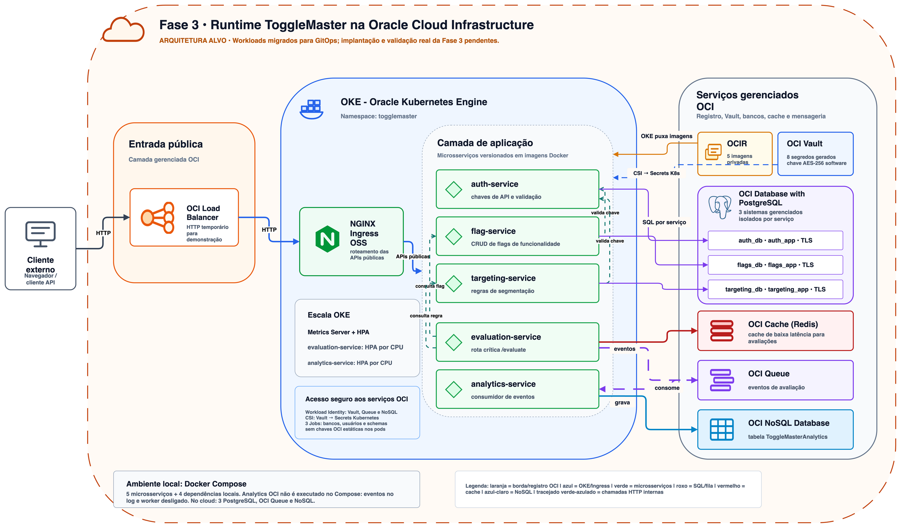
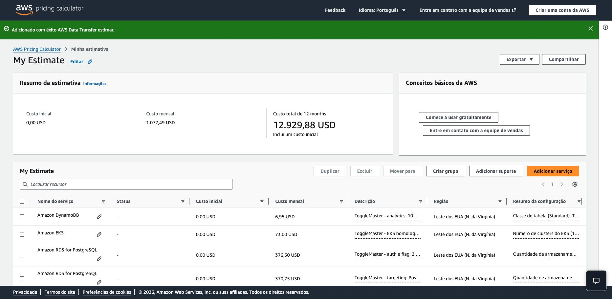
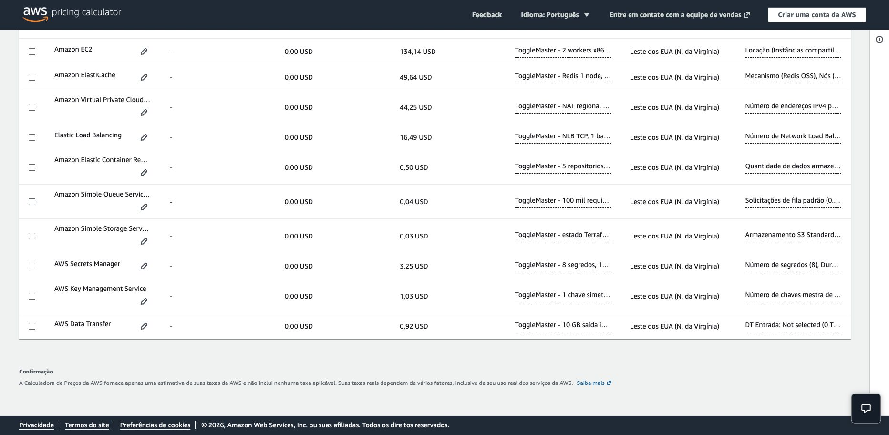
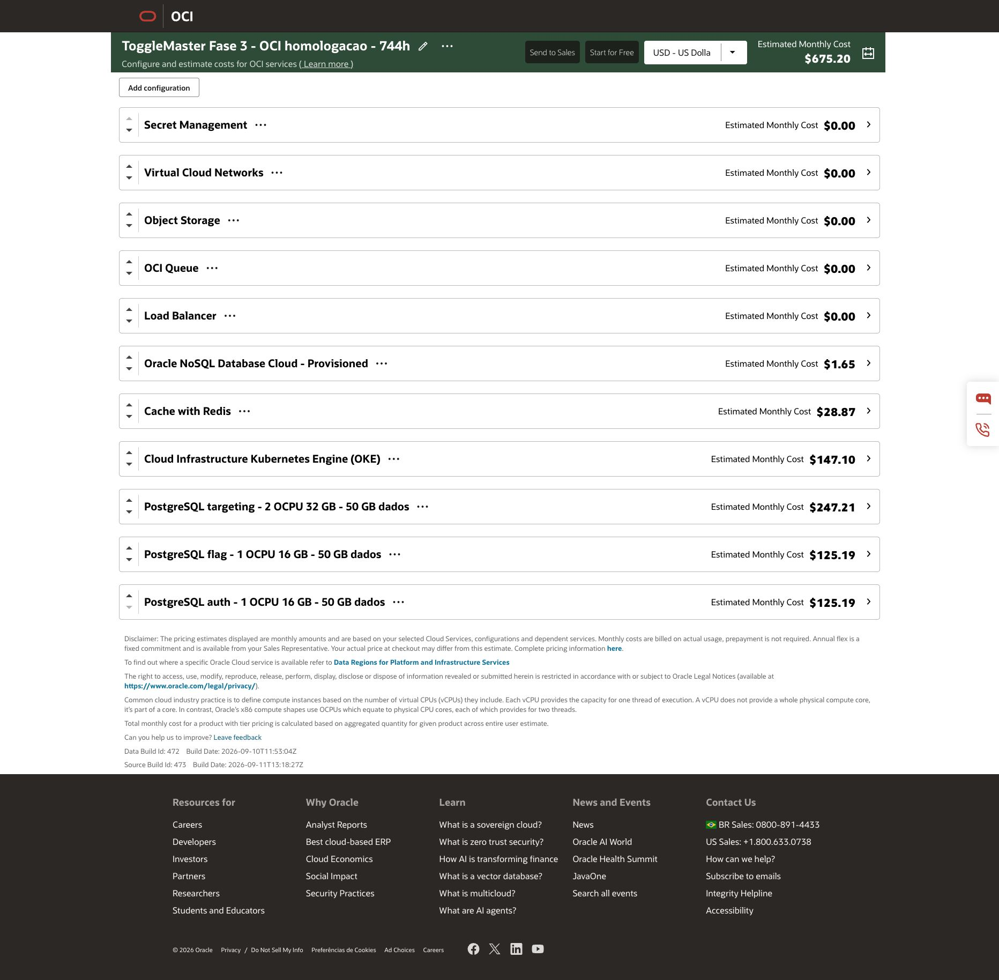

ToggleMaster
Preparação para submissão: infraestrutura e fluxo de entrega verificados. Inserir o link do vídeo após a gravação.
Participante
Julio Cesar Diniz Nogueira — RM373719 — Grupo 76.
Identificação preservada do projeto; conferir antes da submissão.
Links
Código, CI e infraestrutura: https://github.com/JulioDinizN/tech-challenge-fase-3
GitOps: https://github.com/JulioDinizN/tech-challenge-fase-3-gitops
Documentação: https://github.com/JulioDinizN/tech-challenge-fase-3/tree/main/docs
Vídeo da Fase 3: PENDENTE — preencher após gravar e publicar vídeo de até 20 minutos.
Os links dos repositórios precisam conter a versão final e ter acesso verificado para avaliação.
Solução e decisões
Cinco microsserviços, IaC, DevSecOps e GitOps. OCI foi aceita pela disciplina conforme confirmação do responsável pelo projeto em 13/09/2026. Equivalências: VPC/VCN, EKS/OKE, RDS/OCI PostgreSQL, ElastiCache/OCI Cache, SQS/OCI Queue, DynamoDB/OCI NoSQL, ECR/OCIR e S3/Object Storage. A estimativa AWS exigida acompanha a entrega.
Um único ambiente homolog temporário. Não há ambiente production duplicado. Terraform separa backend, core e platform em states distintos; core instancia o módulo composto oci-runtime. Platform instala Argo CD via Helm. CI testa, analisa e escaneia cada serviço em jobs separados; somente após aprovação publica imagens imutáveis e atualiza tags no GitOps. Argo realiza a entrega automática. Segredos de runtime ficam no OCI Vault, com Workload Identity e CSI; credenciais de publicação não são repassadas aos jobs de validação.
Desafios
Preservar os contratos dos cinco serviços; separar validação sem credenciais da publicação; garantir dono único dos recursos Kubernetes; coordenar inicialização dos bancos e secrets; validar workers OKE 1.34.2 com Oracle Linux 8.10 build1462 e shape E3 Flex; corrigir labels reservadas do kubelet e limitar as permissões do ingress; preparar teardown na ordem correta para o Load Balancer gerenciado pelo Kubernetes.
Custos e anexos
AWS: US$ 1.077,49 por 730 horas, sem free tier.
OCI: US$ 675,20 por 744 horas no estimador; US$ 672,20 por 730 horas sem franquias para comparação.
Premissas e limitações em docs/costs/README.md; estes valores mensais não são orçamento exato de uma sessão de gravação.
AWS: https://calculator.aws/#/estimate?id=b49777aec14492a057f24a0d2a39f829464dbd85
OCI: https://www.oracle.com/cloud/costestimator.html (importar docs/costs/oci-estimate.json para restaurar a configuração).
Prints: docs/costs/aws-calculator.png, aws-calculator-details.png e oci-calculator.png.
PDFs anexos: docs/costs/aws-estimate.pdf e oci-estimate.pdf.
Validação e evidências — 14/09/2026
Infraestrutura implantada com backend remoto. Planos finais de core e platform sem diferenças. Dois workers Ready e cinco aplicações Synced/Healthy. Smoke pelo Load Balancer aprovado: autenticação, flag, regra e avaliação true. Analytics consumiu a fila e persistiu evento no OCI NoSQL.
Segurança bloqueante: https://github.com/JulioDinizN/tech-challenge-fase-3/actions/runs/34798247987 (Bandit B602 HIGH).
Correção aprovada: https://github.com/JulioDinizN/tech-challenge-fase-3/actions/runs/34798456990
Publicação e promoção automática: https://github.com/JulioDinizN/tech-challenge-fase-3/actions/runs/34802171409
Terraform CI final: https://github.com/JulioDinizN/tech-challenge-fase-3/actions/runs/34802800278
Fonte f4e1d59 → imagem sha-f4e1d59faf8e → GitOps 555ac3fa236c9471e11d3fbd1abf90bd3f2fb8f6 → Argo com initiatedBy.automated=true.
Digest observado: sha256:9e5b35665560d3753a0ee294efc4c5fce096337fde4f05538c92848db7a21c4c.
A estimativa original considera workers E5; o ambiente implantado usa E3. A diferença de custo está documentada em docs/costs/README.md.
Pendente para submissão: gravar e publicar vídeo de até 20 minutos, inserir seu link e revisar áudio, legibilidade e identificação. Encerrar infraestrutura após conferir e salvar os clipes.
Arquitetura da solução

Arquitetura de runtime

Estimativa AWS — resumo

Estimativa AWS — detalhamento

Estimativa OCI
